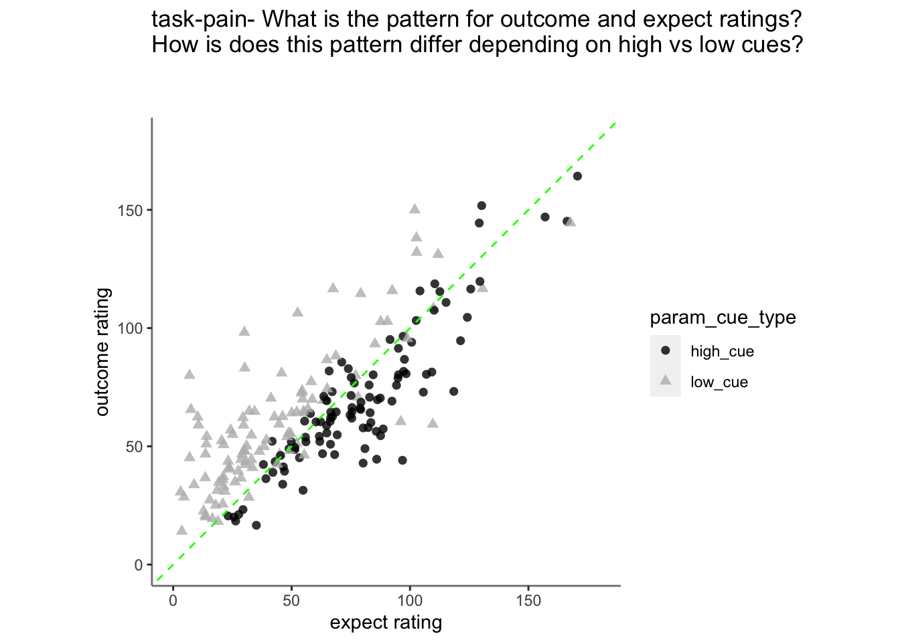
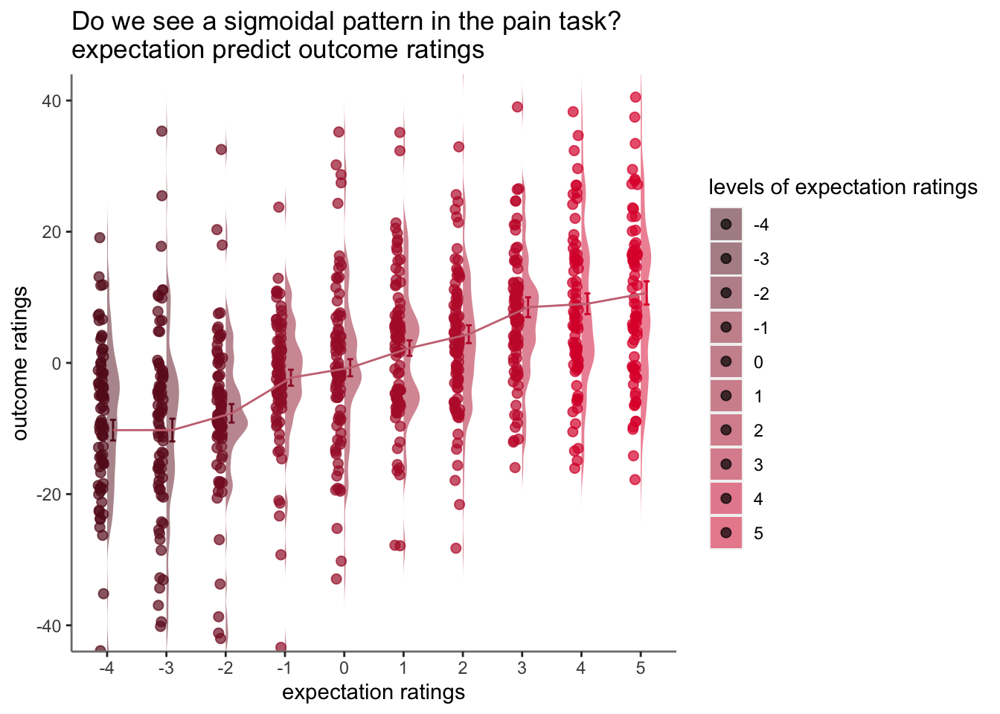

Chapter 14 outcome ~ expect Jayazeri (2018)
date: '2022-09-13'
updated: '2023-02-07'TODO
- plot individual ratings (check distribution)
- afterwards, normalize the ratings and bin them
- 0207 future explore sigmoid fitting https://stackoverflow.com/questions/63568848/fitting-a-sigmoidal-curve-to-points-with-ggplot
14.1 Overview
- My hypothesis is that the cue-expectancy follows a Bayesian mechanism, akin to what’s listed in Jayazeri (2019)
- Here, I plot the expectation ratings (N) and outcome ratings (N) and see if the pattern is akin to a sigmoidal curve.
- If so, I plan to dive deeper and potentially take a Bayesian approach.
- Instead of (N-1), we’ll be using the cue and the expectation ratings to explain the outcome ratings
load data and combine participant data
main_dir = dirname(dirname(getwd()))
datadir = file.path(main_dir, 'data', 'beh', 'beh02_preproc')
# parameters _____________________________________ # nolint
subject_varkey <- "src_subject_id"
iv <- "param_cue_type"
dv <- "event04_actual_angle"
dv_keyword <- "outcome_rating"
xlab <- ""
ylab <- "ratings (degree)"
subject <- "subject"
exclude <- "sub-0999|sub-0001|sub-0002|sub-0003|sub-0004|sub-0005|sub-0006|sub-0007|sub-0008|sub-0009|sub-0010|sub-0011"
analysis_dir <- file.path(main_dir, "analysis", "mixedeffect", "model13_iv-cue-expect_dv-outcome", as.character(Sys.Date()))
dir.create(analysis_dir, showWarnings = FALSE, recursive = TRUE)14.2 Do expectation ratings predict current outcome ratings? Does this differ as a function of cue?
- see if current expectation ratings predict outcome ratings
see if prior stimulus experience (N-1) predicts current expectation ratingssee if current expectation ratings are explained as a function of prior outcome rating and current expectation rating
14.3 task-pain, HLM modeling
lmer(outcome ~ cue * expectation + (1|participant))
## Linear mixed model fit by REML. t-tests use Satterthwaite's method [
## lmerModLmerTest]
## Formula: event04_actual_angle ~ param_cue_type * event02_expect_angle +
## (1 | src_subject_id)
## Data: df_dropna
##
## REML criterion at convergence: 48127.4
##
## Scaled residuals:
## Min 1Q Median 3Q Max
## -4.2631 -0.6098 -0.0018 0.6174 4.8539
##
## Random effects:
## Groups Name Variance Std.Dev.
## src_subject_id (Intercept) 436.2 20.88
## Residual 550.8 23.47
## Number of obs: 5219, groups: src_subject_id, 104
##
## Fixed effects:
## Estimate Std. Error df
## (Intercept) 4.502e+01 2.525e+00 2.056e+02
## param_cue_typelow_cue 1.068e+00 1.451e+00 5.168e+03
## event02_expect_angle 3.114e-01 1.760e-02 5.203e+03
## param_cue_typelow_cue:event02_expect_angle 2.357e-02 1.874e-02 5.130e+03
## t value Pr(>|t|)
## (Intercept) 17.827 <2e-16 ***
## param_cue_typelow_cue 0.736 0.462
## event02_expect_angle 17.693 <2e-16 ***
## param_cue_typelow_cue:event02_expect_angle 1.258 0.209
## ---
## Signif. codes: 0 '***' 0.001 '**' 0.01 '*' 0.05 '.' 0.1 ' ' 1
##
## Correlation of Fixed Effects:
## (Intr) prm___ ev02__
## prm_c_typl_ -0.477
## evnt02_xpc_ -0.549 0.762
## prm___:02__ 0.329 -0.829 -0.59514.4 Fig. Expectation ratings predict outcome ratings
Purpose of this section: * Before binning the data, I want to check if expectation ratings explain outcome ratings.
Observation: * 1. expectation ratings after a high cue reflect an overestimation, that is compensated for a lower outcome rating. * 2. expectation ratings after a low cue reflects an overestimating, which is compensated with a higher outcome rating 
TODO: PLOT participant rating
- purpose: to see the raw data distribution. Are there any alarming participants to remove? x axis participant y axis histogram of actual ratings
Check bin process
Let’s demean the ratings for one participant
- bin ratings Do the bins do their jobs? plot one run then check the min, max and see if the quantization is done properly. YES, it is
- confirm that df discrete has 10 levels per participant
- the number of counts per frequency can differ
k <-df_dropna %>% group_by(src_subject_id) %>% filter(n()>= 5) %>% ungroup()
df_discrete = k %>%
group_by(src_subject_id) %>%
mutate(bin = cut_interval(event04_actual_angle, n = 10),
outcomelevels = as.numeric(cut_interval(event04_actual_angle, n = 10)))
res <- df_discrete %>%
group_by(src_subject_id,outcomelevels) %>%
tally()
dset1 <- head(res)
knitr::kable(dset1, format = "html")| src_subject_id | outcomelevels | n |
|---|---|---|
| 13 | 1 | 2 |
| 13 | 3 | 5 |
| 13 | 4 | 3 |
| 13 | 6 | 4 |
| 13 | 7 | 9 |
| 13 | 8 | 5 |
14.5 binned expectation ratings per task
14.6 not splitting into cue groups
- checked warnings: None  https://groups.google.com/g/ggplot2/c/csPNfSLKkco